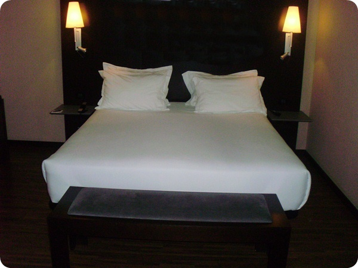

El subdepartamento de Pisos tiene como función la limpieza y mantenimiento de las áreas de habitaciones, planta noble, accesos y dependencias del establecimiento, tanto zonas de clientes como zonas de administración. También se ocupa de la limpieza de pasillos, escaleras, ascensores, etc. También debe realizar la conservación del mobiliario y los cambios de ropa de las habitaciones. Algo que no se suele indicar, y que otorga al personal de pisos un valor añadido, es su obligación velar por los bienes que son propiedad del cliente.
A su vez, dispone de otro subdepartamento, dependiente de éste de Pisos, al que se conoce como Lavandería y Lencería, y cuyas funciones están relacionadas con el control e inventario de la ropa del hotel, su lavado y planchado, procediendo a su reparación de costura si lo precisase, y a la atención de las necesidades de limpieza o planchado de prendas de los clientes.